End-to-end technical delivery and strategic advisory — from raw data to lasting organisational capability.
Solution Area 1
End-to-end technical delivery — from raw data to production-ready systems.
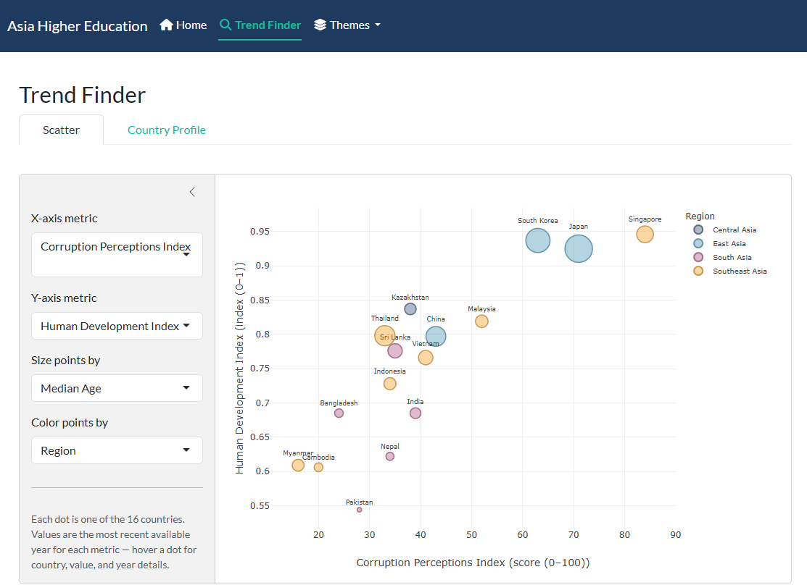
Business and policy intelligence tools that make analytical findings accessible to decision-makers.
Examples: Interactive youth justice reporting dashboard for a Queensland state government department; market research web tool and dashboard for a large metropolitan university; automated survey analysis and reporting application for a federal government department.
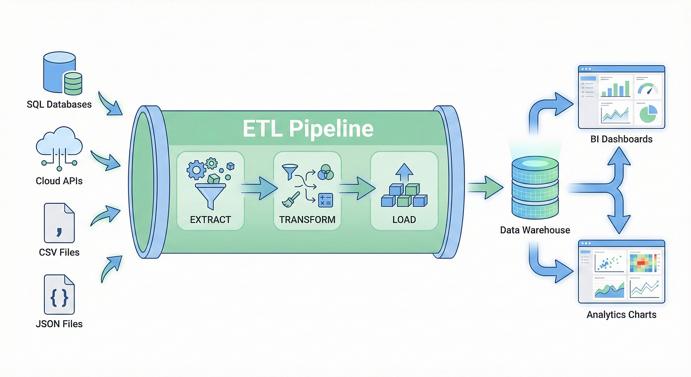
Automated systems that replace manual, time-consuming workflows — freeing your team to focus on higher-value work.
Examples: Automated reporting pipeline for a Queensland state government department; automated survey analysis application for a federal government department.
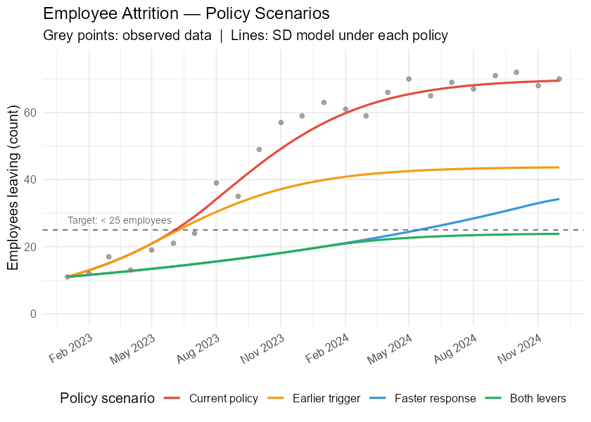
Quantitative models that translate strategic questions into structured, computable scenarios.
Examples: 15-year service capacity and infrastructure demand model and scenarios for a leading Melbourne hospital; workforce supply scenario modelling for a federal infrastructure planning agency; sector-level higher education funding and financial position analysis for a major public university.
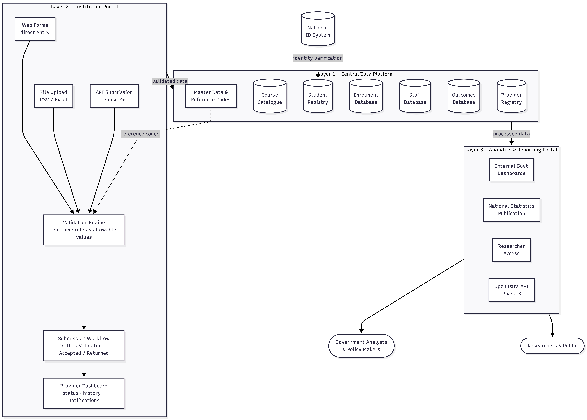
The data infrastructure that underpins reliable analytics, reporting and regulatory compliance.
Examples: Proprietary data warehouse design using star schema with staging and production environments; system / nation-level design of education information management systems.
Solution Area 2
Rigorous quantitative methods applied to complex organisational and policy questions.
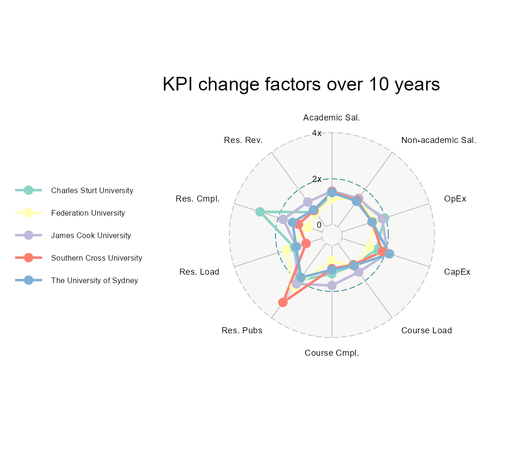
Quantitative frameworks for measuring organisational performance against objectives.
Examples: Productivity and efficiency measurement frameworks for Australian and international higher education institutions (peer-reviewed publications and a Springer monograph); corporate services benchmarking for Australian universities; Balanced Scorecard development for an Indonesian corporate client.
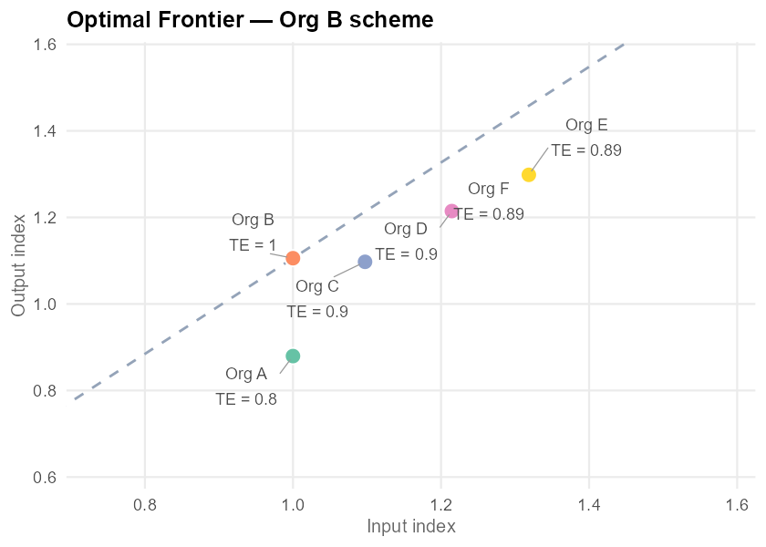
Mathematical optimisation across competing variables for more speed, nuance and reliability than manual processes.
Examples: Constrained optimisation timetabling systems for two a major Western Australian universities.
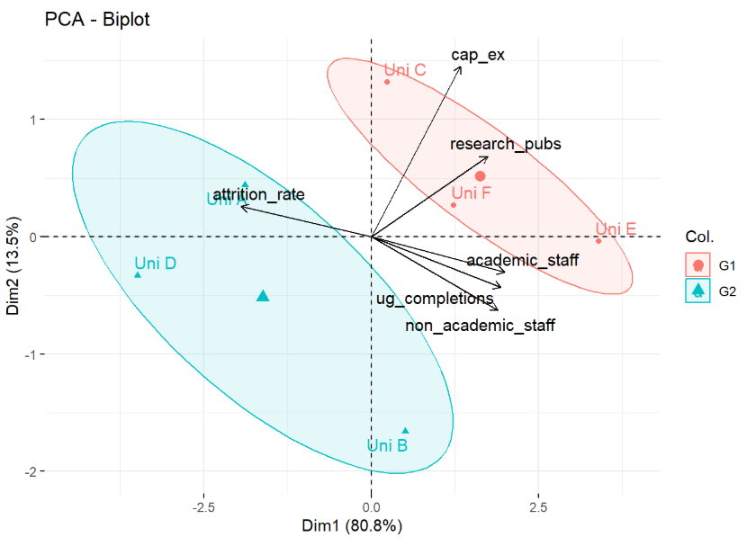
Statistical and machine learning models that forecast outcomes, identify risk, or confirm relationships.
Examples: Statistical survey analytics and confidence intervals for a nationwide questionnaire to understand post-COVID regulatory change and impact; student attrition prediction models for at-risk students at a large West Australian university; productivity and efficiency measurement across international higher education systems using DEA and Törnqvist index methods.
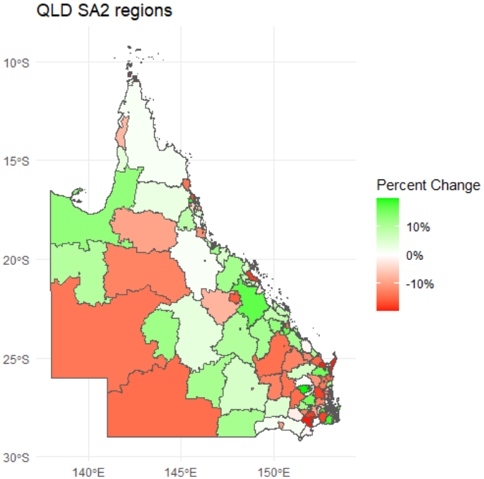
Institution and nation-level program evaluation, focused on impact service delivery.
Examples: Interactive geospatial dashboard mapping service provision gaps across a remote territory; SA2-level workforce skills supply assessment for a federal infrastructure initiative; VET market & skills evaluation for two regional TAFEs.
Solution Area 3
Strategic guidance and capability building for teams navigating data-driven change.
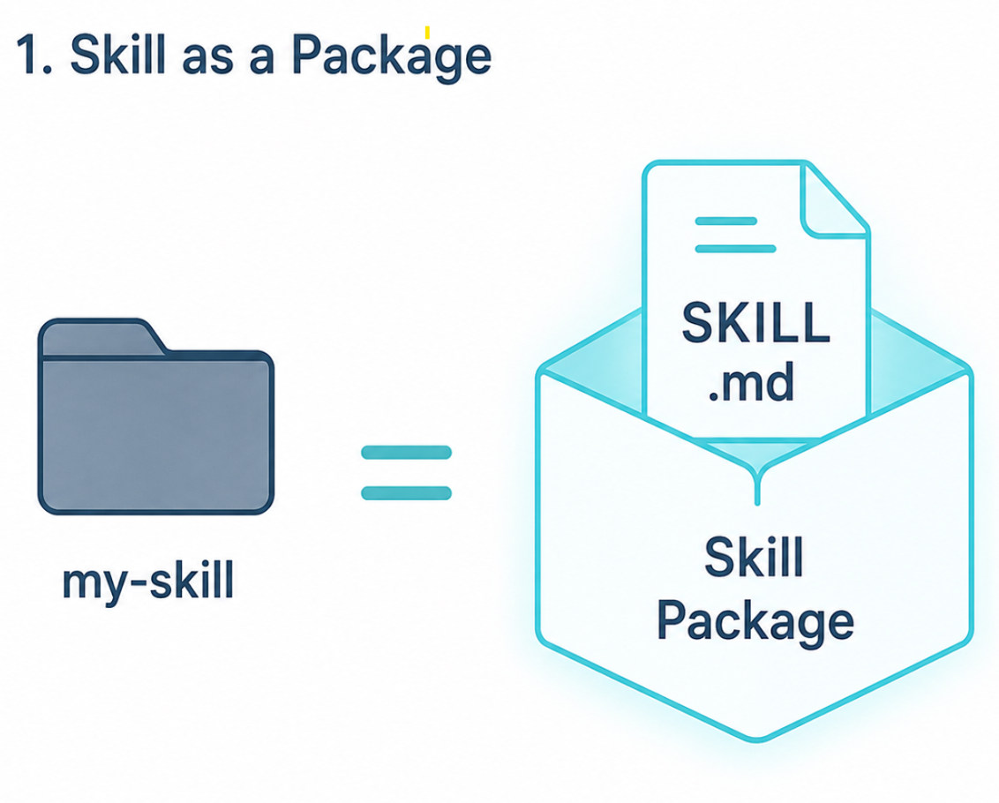
Assessing and closing the gap between where an organisation’s data and processes are today and what genuine AI adoption requires.
Examples: Company-wide AI-assisted workflow adoption — including agent-based tooling, company-specific rules and skills, and staff prompt engineering training; analytics capability uplift and workflow integration for a Queensland state government department.
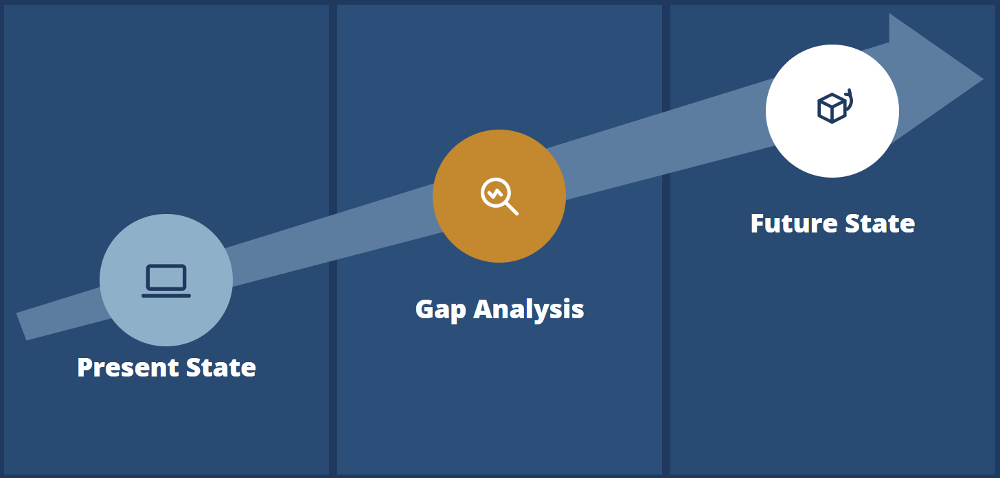
Expert advisory for educational institutions navigating curriculum design, quality assurance, and strategic planning.
International student recruitment strategy for a major Australian university. Non-academic workforce transformation roadmap for major Australian university.
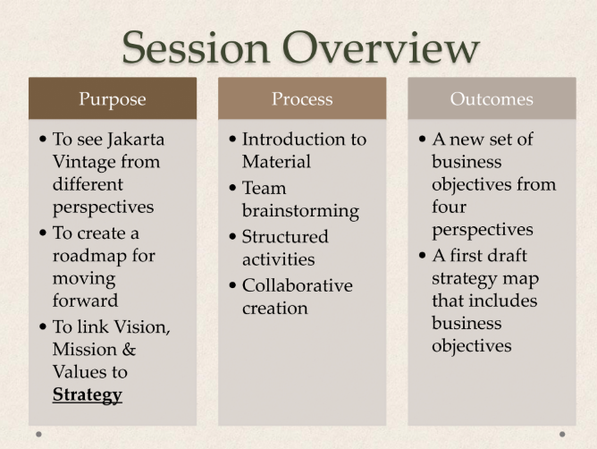
Structured sessions that build shared understanding and drive decisions for executives and administrators.
Examples: Systems thinking and Balanced Scorecard development workshops for executives; staff consultations and capacity-building workshops for non-profits; strategic planning, objective and KPI development for complex organisations.
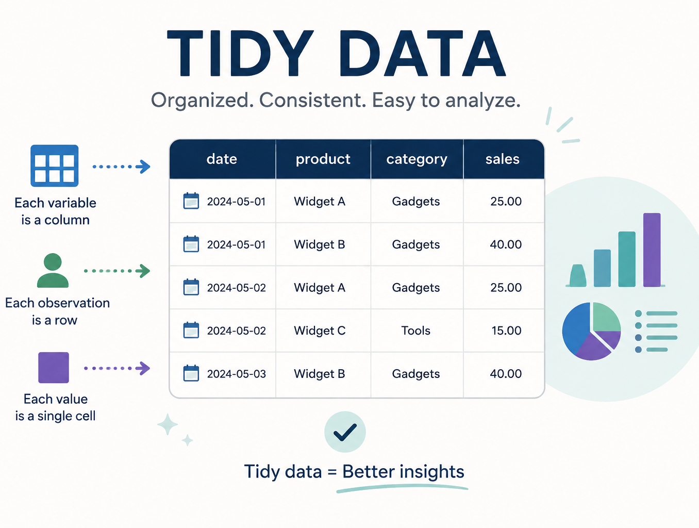
Bespoke training programs for professional and technical audiences, designed and delivered in-context.
Examples: Analytics bootcamp for junior staff; R and data analysis training embedded within client project delivery; prompt engineering and AI context training for professional staff.
Solution Area 4
Specialist education advisory and curriculum development for Indonesian institutions and government partners.
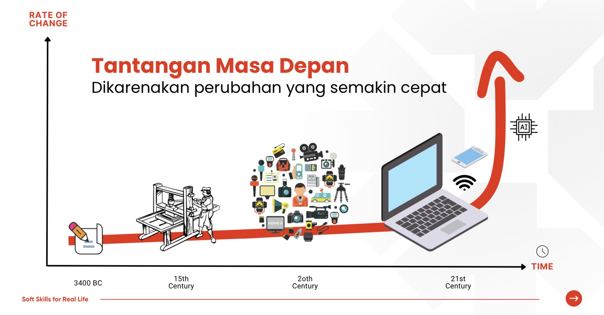
Experiential and AI curriculum design and training, aligned to national qualification frameworks, international standards and the future of work.
Partnering with Katalis to deliver hard and soft skills for real life. Essential future-focused learning opportunities for students and training programs for educators.
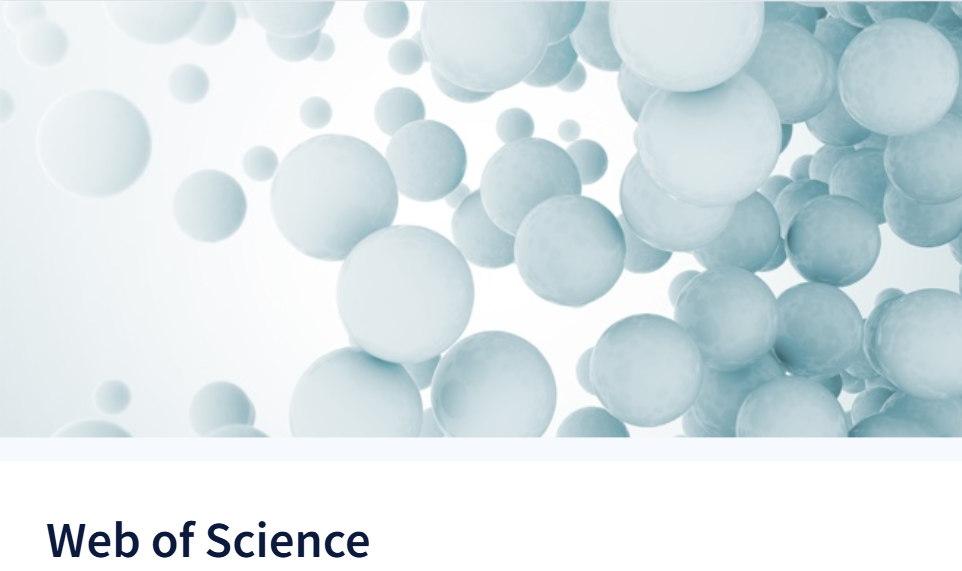
Tesearch design, and publication support for Indonesian academics targeting international peer-reviewed journals.
Led the establishement of the Office of Research at Sampoerna University, Jakarta including documented research standards and training. Published in multiple top SSCI indexed journals with international collaborators.
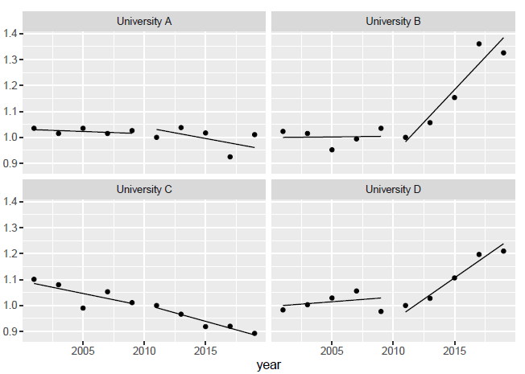
Hands-on training in quantitative methods, statistical software, and research design for Indonesian academics and research students.
Proven track record of published quantitative research. Author of Springer monograph on data analytics training. Strong background in mathematics and statistics education for students, academics and professionals: University of Melbourne, Monash University, Sampoerna University, Queensland State Government.
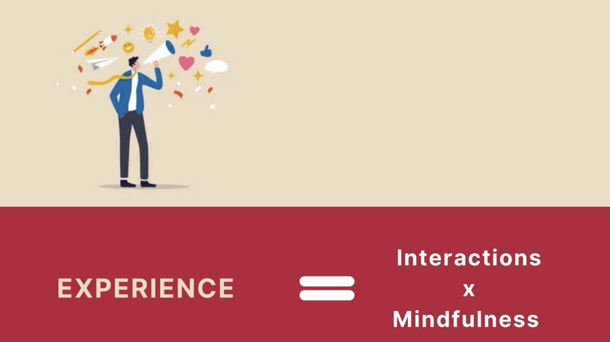
School-level curriculum innovation and teacher capability development for the Indonesian K-12 context.
Partnering with Katalis to reimagine and to redefine K-12 educational delivery. Essential future-focused training programs, tools and software for educators.
Whether you have a data project, a training need, or just want to explore what’s possible — I’d love to hear from you.
Get in Touch